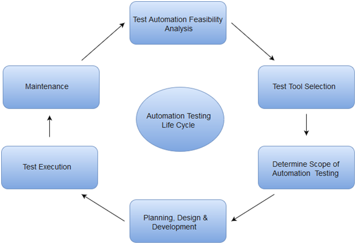
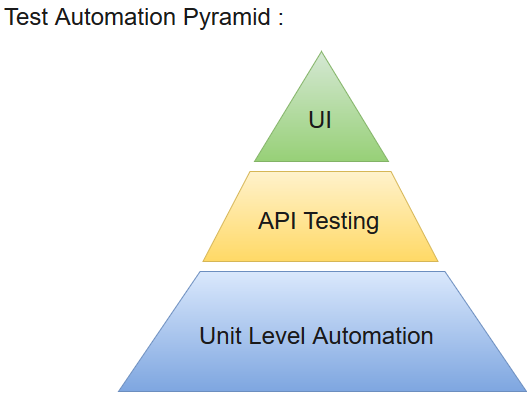

Selenium Basic Terminology
Before proceeding with this tutorial, let us first understand some of the key concepts associated with Automation testing of an application.
With the growing need for efficient software products, every software development group need to carry out a series of tests before launching the final product into the market. Test engineers strive to catch the faults or bugs before the software product is released, yet delivered software always has defects. Even with the best manual testing processes, there's always a possibility that the final software product is left with a defect or is unable to meet the end user requirement. Automation testing is the best way to increase the effectiveness, efficiency and coverage of your software testing..
Selenium Basic Terminology
Automation testing uses the specialized tools to automate the execution of manually designed test cases without any human intervention. Automation testing tools can access the test data, controls the execution of tests and compares the actual result against the expected result. Consequently, generating detailed test reports of the system under test.
Automation testing covers both functional and performance test on an application.
#- Functional automation is used for automation of functional test cases. For example, regression tests, which are repetitive in nature, are automated.
#- Performance automation is used for automation of non-functional performance test cases. For example, measuring the response time of the application under considerable (say 100 users) load.
@-Automation Testing tools which are used for functional automation:
1- Quick Test Professional, provided by HP.2-Rational Robot, provided by IBM.
3-Coded UI, provided by Microsoft.
4-Selenium, open source..
@-Automation Testing tools which are used for non-functional automation:-
1- Load Runner, provided by HP.2- JMeter, provided by Apache.
3- Burp Suite, provided by PortSwigger.
4- Acunetix, provided by Acunetix.
Automation Testing Life Cycle

Why Automated Testing
@-Automation testing has specific advantages for improving long-term efficiency of any software. The key benefits of test automation are:
1- Automated testing tools are able to playback pre-recorded and pre-defined actions.
2- Automation testing supports frequent regression testing.
3- It provides rapid feedback to developers.
4- It provides unlimited iterations of test case execution.
5- It provides disciplined documentation of test cases.
6- Automated test generates customized defect reports.
7- Less error prone as compared to manual testing.
Test Automation for Web Applications
If we take a look at the type of software applications prevailing in current market scenario, most of the software applications are written as web-based applications to be run in an internet browser. The testing strategy for web-based applications varies widely among companies and organizations.In an era of highly interactive and responsive software processes where many organizations are using some form of agile methodology, test automation is frequently becoming a requirement for software projects.
The most effective manner to carry out test automation for web application is to adopt a pyramid testing strategy.This pyramid testing strategy includes automation tests at three different levels. Unit testing represents the base and biggest percentage of this test automation pyramid. Next comes, service layer, or API testing. And finally, GUI tests sit at the top. The pyramid looks something like this:
